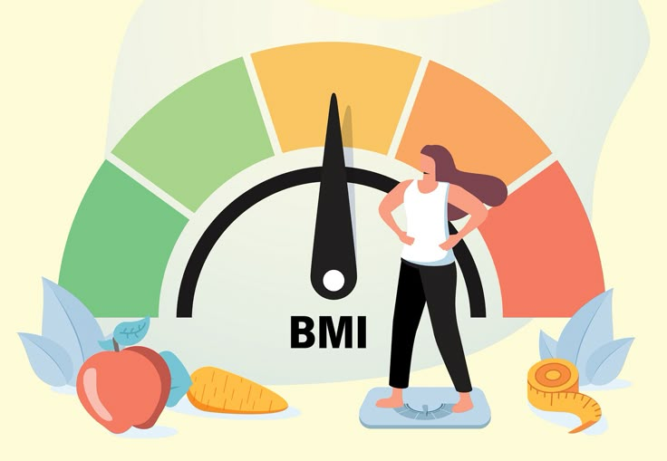

Welcome to BMI Checker
Check your Body Mass Index (BMI) and get personalized health advice.
Get Started
What is BMI?
Body Mass Index (BMI) is a simple calculation that helps determine whether a person has a healthy weight for their height. It is calculated using the formula:
BMI = weight (kg) / height² (m²)
A healthy BMI typically falls between 18.5 and 24.9. A BMI below 18.5 is considered underweight, while a BMI above 25 may indicate overweight or obesity.
Consider the scale;
How to Use the BMI Web
Curious about your health? Checking your Body Mass Index (BMI) has never been easier! Simply enter your weight and height, and let our smart calculator do the rest.
Instantly get insights into your BMI category and receive personalized health tips to stay on track.
Ready to take control of your fitness journey? Click below and check your BMI now!
Check BMI